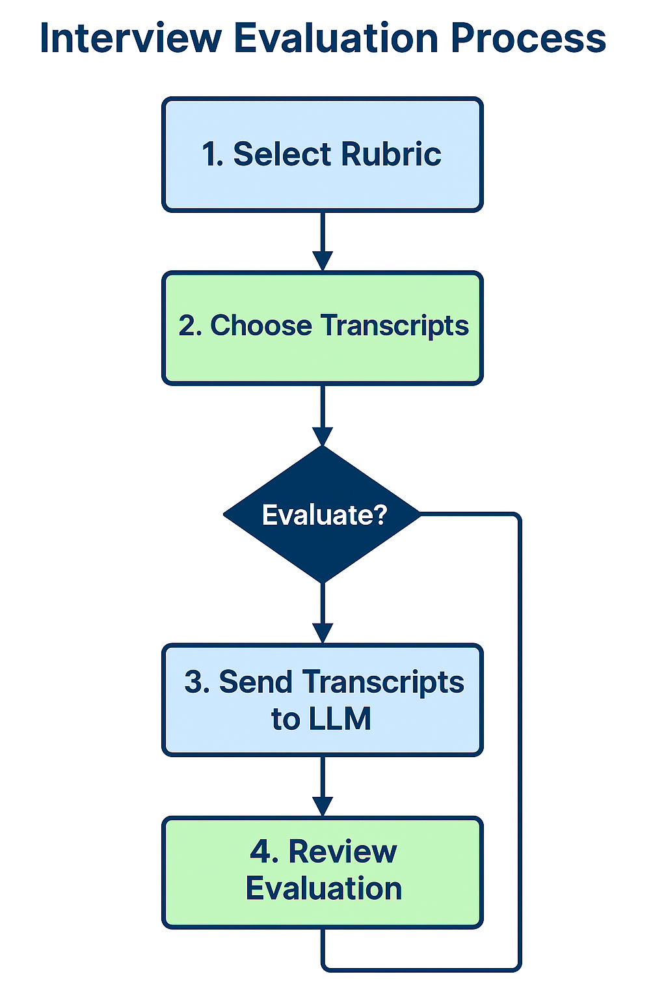
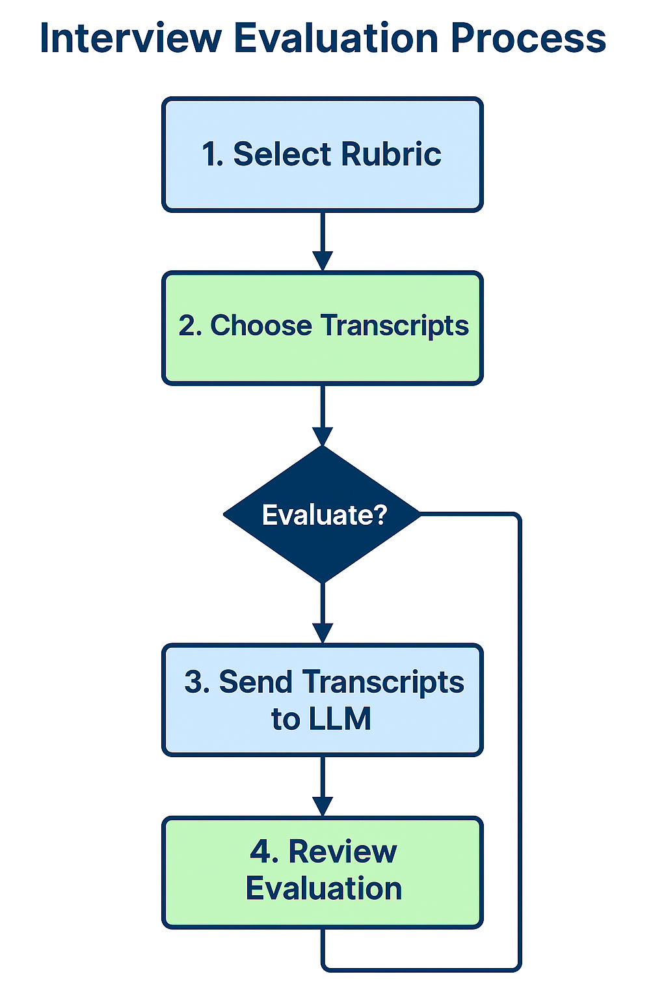

Summary of Technical Contributions – SkillScope Prototype 2
Author: Jeffrey Weekley
Role: Primary Full-stack Developer, Designer, and Technical Implementation Lead
Project: SkillScope Prototype 2 – Full-Stack AI-Powered Interview Evaluation System
Duration: Spring 2025
Overview
SkillScope is a full-stack web application designed to support asynchronous voice-based interviews with AI-powered evaluation using OpenAI's LLMs. The system provides both student-facing and interviewer-facing workflows, emphasizing accessibility, automation, and pedagogical transparency.
This prototype demonstrates the feasibility of AI-assisted formative assessments for higher education using recorded talk-aloud interviews and rubric-based evaluations.
Project Repository:
https://github.com/jweekley-ucsc/SkillScopePrototype2.git
Technical Contributions
1. Interactive Web Application
- Designed and implemented a multi-page web interface using HTML, CSS, and JavaScript.
- Pages include:
index.html: Entry point and site navigationlogin.html: Entry point for intervieweesinterview.html: Audio recording and transcript preview for studentsinterviewer.html: Rubric upload, transcript selection, and evaluation interfaceadmin.html: Placeholder for future system admin functionality
- Custom JavaScript modules (
interview.js, interviewer.js, admin.js) provide client-side logic.
Site Structure Map
graph TD
A[index.html] --> B[login.html]
B --> C[interview.html]
A --> D[interviewer.html]
A --> E[evaluate.html]
A --> F[admin.html]
2. Custom Recording and Transcription Pipeline
- Integrated OpenAI Whisper API for client-initiated audio transcription.
- Implemented a countdown timer, transcript preview, and single-submission enforcement for students.
- Audio recordings saved as
.webm files and paired with metadata in .json.
- Created preview and review stages for students to check transcripts before submission.
Interviewee Interaction Diagram
 

Component and Event Architecture (graphTD)
graph TD
%% ===== UI Pages =====
subgraph UI_Pages
A1[index.html]
A2[login.html]
A3[interview.html]
A4[interviewer.html]
A5[evaluate.html]
end
%% ===== JavaScript Functions =====
subgraph JS_Functions
J1["startRecording"]
J2["stopRecording"]
J3["parseRubric"]
J4["fetchTranscripts"]
J5["displayTranscript"]
J6["submitSelectedTranscripts"]
J7["selectAllTranscripts"]
end
%% ===== Flask Routes =====
subgraph Flask_Routes
F1["GET /"]
F2["GET /transcripts"]
F3["POST /evaluate-transcript"]
F4["POST /upload-audio"]
F5["POST /transcribe"]
end
%% ===== Data Assets =====
subgraph Data_Storage
D1[transcripts.jsonl]
D2[test_rubric.csv]
D3[uploaded_audio/*.webm]
D4[.env API Key]
end
%% ===== Page Navigation =====
A1 --> A2
A1 --> A4
A1 --> A5
A2 --> A3
A4 --> A5
%% ===== Frontend-Backend Interactions =====
A3 --> J1
A3 --> J2
A4 --> J3
A4 --> J4
A4 --> J5
A4 --> J6
A4 --> J7
J4 --> F2
J6 --> F3
J1 --> F4
J2 --> F5
J3 --> D2
F2 --> D1
F3 --> D4
F4 --> D3
F5 --> D3
3. Evaluation Workflow for Interviewers
- Implemented multi-transcript selection with dynamic preview panel.
- Built state-tracking system for selected transcripts with toggling, color indicators, and deselection.
- Connected to OpenAI’s Chat API for rubric-based evaluation of multiple transcripts.
- Evaluation results are logged and displayed, with logic to prevent duplicate submissions.
4. Rubric Integration and Session Management
- Rubrics are uploaded in
.csv format and stored in Flask instance/ path.
- The latest rubric persists during session and is included with all evaluations.
- Removed redundant "Submit Rubric" button after implementing auto-preview and in-memory state management.
5. Flask Server and Secure Routing
- Built a robust Flask backend with routes for:
/upload, /submit-transcript, /transcripts, /evaluate-transcript, etc.
- All audio and transcript files stored securely in
/instance/ and /uploaded_audio/.
- Used secure filenames, exception handling, and status code responses.
.env file stores OpenAI API key and system secrets.
6. Evaluation Logic and LLM Assessment Module
- Authored
llm_assess_interviews.py to modularize the LLM evaluation logic.
- Receives transcript and rubric, formulates structured GPT-4 prompt, and parses the returned assessment.
- Supports multiple performance dimensions and categorical output parsing.
7. Process Mapping and Accessibility Design
- Defined interviewer and interviewee flows using accessibility-informed principles.
- Ensured contrast ratios, font sizing, and semantic HTML for W3C compliance.
- Used Mermaid and visual diagrams for planning and documentation.
Future Work
- Admin panel to manage transcripts, users, and evaluation tracking.
- Integration of persistent session and identity tracking.
- User-specific history, rollback support, and rubric versioning.